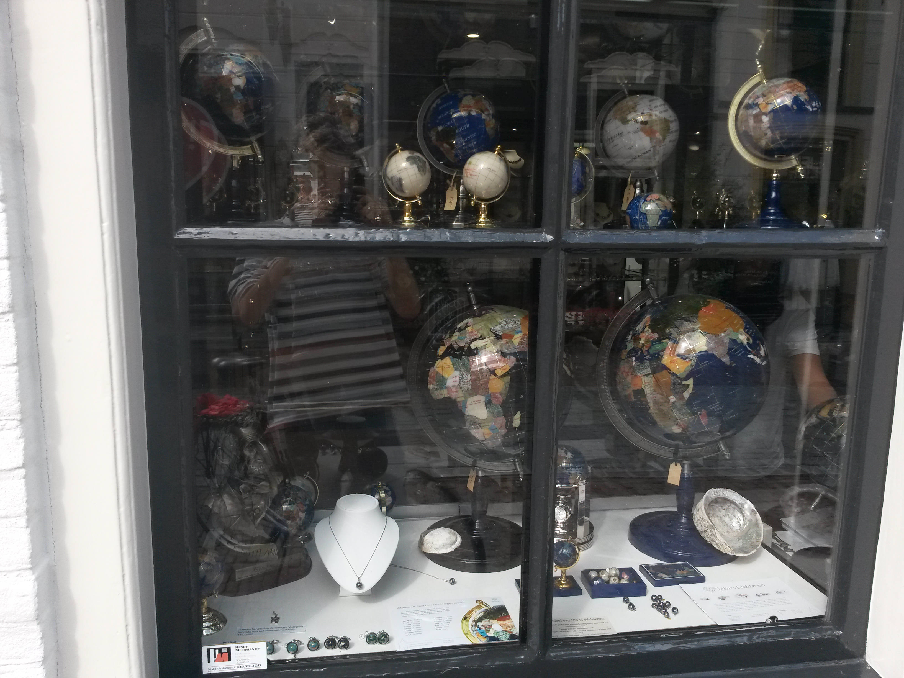
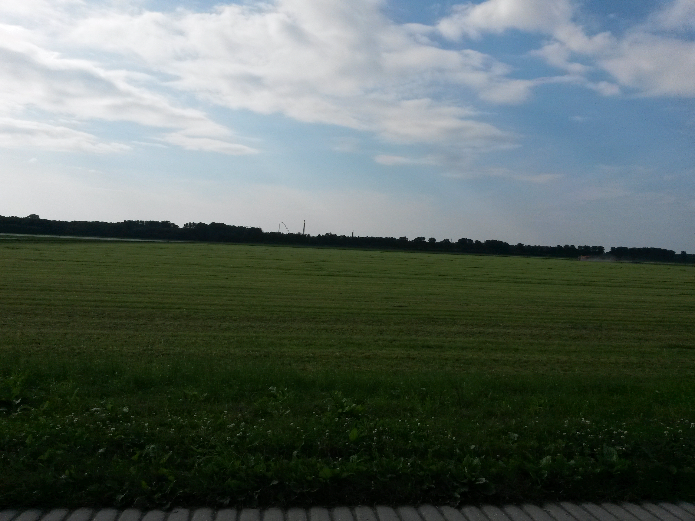
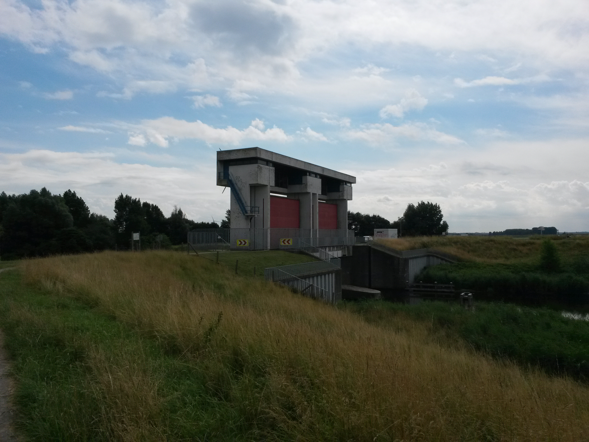

Trektocht Twello - Elburg - Loosdrecht - Culemborg
Dit is een reisverslag van de tocht die ik gemaakt heb
van 6 tot 9 juli 2021. Ik ben toen van Twello naar
Elburg, Loosdrecht en Culemborg gefietst.
Ik had al een tijdje geleden besloten dat ik graag een
trektocht wilde doen op de fiets. Deze reis fungeerde als een
oefening voor de grote trektocht naar de Ardennen die ik deze
vakantie wilde gaan maken.

Spullen die ik meenam
Eten
- Mini Jampotjes
- Een kooktoestel
- Twee borden
- Twee bekers
- Een mes
- Een vork
- Groene thee
- Afwasmiddel
- Olijfolie
- Snijplank
- Spiritus fles
- Afwasborstel
- Opblaasbare teil
- Snijplank (Had ik niet nodig)
Elektronica
- Mobiele telefoon
- Powerbank
- Oortelefoon
Opslag
- Een rugzak
- Een kleine tas
- Twee fietstassen.
- Twee vuilniszakken
- Snelbinders
Overige
- Slaapzak
- Een tent
- Kleding
- Zwembroek
- Lucifers
- Pinpas
- Contant geld
- OV-chipkaart
Verzorging
- Tandenborstel
- Tandpasta
- Shower gel
- Handdoek (Had ik niet nodig)
- Drie washandjes (één gebruikt)
- Twee sneldrogende doeken
- Kam
- Deodorant
6 juli
Ik zou deze dag vanuit Culemborg eerst met de trein naar
station Ede-Wageningen gaan. Daar vanuit zou ik met de bus naar
de camping waar onze stacaravan staat gaan. Hier had ik ook de fiets
staan die ik zou gebruiken voor deze trektocht. Met die fiets
zou ik naar mijn opa en oma fietsen in Twello. Ik zou met mijn
tent in hun tuin gaan overnachten en de dag daarna mijn
trektocht voortzetten.
Ik begon de dag met mijn spullen inpakken. Dit moest allemaal
in de rugzak en het koste best veel moeite om het er allemaal
in te laten passen. Uiteindelijk paste alles erin, behalve mijn
twee fietstassen die ik maar in een andere kleine tas deed. Ik
vertrok toen naar het station van Culemborg met de rugzak op
mijn rug en de kleine tas aan mijn hand. Ik ging ook nog langs
de fietsenwinkel om snelbinders te kopen voor mijn fiets. Ik
nam de trein van 14:00 naar Utrecht Centraal. Ik zette mijn
rugzak op het bagagerek. Het bagagerek was best klein, dus ik
moet zeggen dat ik me best zorgen maakte dat mijn tas er af zou
vallen. Ik kwam aan op Utrecht Centraal. Daarvandaan nam ik de
trein naar Nijmegen die ook op station Ede-Wageningen stopte.
Ik kende dit station goed. Niet omdat ik hier vaak heen ging
met de trein, maar omdat ik hier altijd langs fietste als ik
vanuit Culemborg naar de camping fietste. Ik wachtte hier nog
een half uur op de bus die naar Hoenderloo vertrok. Ik
stapte hierin en ik kwam ongeveer om 16:00 aan in Hoenderloo.
Het probleem was alleen dat ik één bushalte te vroeg was
uitgestapt en ik dus heel ver moest lopen om bij de camping te
komen. Mijn schouders begonnen pijn te doen onder het gewicht
van de rugzak. Naar ongeveer een uur lopen kwam ik eindelijk
aan bij onze stacaravan.
Ik pakte mijn fiets uit de schuur. Ik ging deze fiets gebruiken
voor mijn trektocht. Ik had besloten dat deze fiets meer
geschikt was voor mijn reis dan mijn stadsfiets in Culemborg,
omdat deze meer versnellingen had, lichter was en ook
comfortabeler was. Ik moest nu al mijn spullen in mijn rugzak
overzetten naar mijn fietstassen. Tot mijn verbazing paste
alles erin behalve mijn tent. Wel had ik het idee dat mijn
fietstassen een beetje overbelast waren aangezien ze er een
beetje gespannen uitzagen. Ik wilde ook nog de snelbinders die
ik gekocht had op mijn fiets zetten. Dit lukte niet, omdat ik
geen schroef had om het vast te zetten. Ik kon de tent dus niet
achterop mijn fiets zetten en besloot het in mijn
rugzak te zetten. De kleine tas die ik gebruikt had om de
fietstassen mee te vervoeren liet ik achter in de caravan.
Ik vertrok toen met een rugzak op mijn rug en twee fietstassen
naar opa en oma. Het was een tocht van ongeveer 20 kilometer.
Ik volgde in het begin vooral de fietsknooppunten, maar later
begon ik die uit het oog te verliezen en lukte het me om zelf de weg
vinden. Het regende ook af en toe, maar dit vond ik niet erg,
want ik hield van de regen. Wel moest ik een jas aan doen, maar
een capuchon vond ik overdreven. Ik kwam ook nog een groep oude
dames tegen die met hun elektrische fietsen naar Raalte aan het
fietsen waren. Zij waren verdwaald en vroegen aan mij of ik ze
de weg wilde wijzen. Ik pakte mijn magisch opzoek apparaat
(ook wel een mobiele telefoon genoemd) uit mijn zak en vertelde
ze dat als ze naar Raalte wilden fietsen ze eerst naar
Twello moesten fietsen, dan naar Deventer, dan naar Wesepe en
dat als ze dan de weg aanhielden bij Raalte uit zouden komen.
Kort daarna arriveerde ik bij mijn opa en oma in Twello.
Mijn opa was zo vriendelijk om de snelbinders op mijn fiets te
zetten. Tegelijkertijd zette ik mijn tent op en pakte ik de
spullen die ik nodig had uit mijn fietstassen. Kort daarna
konden we al eten. Daarna keken we nog samen het nieuws en ben
ik naar bed gegaan.
7 juli
Ik had die nacht heel goed geslapen. Ik stond op rond 9:00,
douchte, kleedde me aan en ging ontbijten. Oma gaf me
bakjes van de Chinees waar ik brood in kon doen. Ik smeerde zes
boterhammen en nam ook nog een blikje cola en een appel mee.
Eerst was het mijn plan om helemaal naar de Afsluitdijk te
fietsen. Dit bleek toch niet zo praktisch te zijn, omdat ik op 10
juli al thuis moest zijn. Ik bedacht toen dat ik via Lelystad naar
Enkhuizen en daarvandaan naar huis zou fietsen. Op oma's
computer zocht ik naar een mooie camping in Flevoland en ik
vond de camping P90. Een camping in de
buurt van Elburg. Ik brak mijn tent af en pakte mijn twee
fietstassen in. Omdat ik nu de tent tussen mijn snelbinders kon
doen, had ik de rugzak niet meer nodig. Ik liet deze dus
achter. Mijn oma fietste nog een stukje mee om me te laten zien
hoe ik naar het volgende knooppunt moest fietsen. Ik vond deze
reis heel erg mooi, omdat er veel natuur was. Wel nam ik soms
best grote omwegen, omdat ik de fietsknooppunten volgde. De
plaatsen waar ik van kan herinneren dat ik er langs kwam zijn
Epe, 't Harde en Elburg. In Elburg stak ik het water over en
kort daarna arriveerde ik op de camping. Ik drukte op de bel en ik
moest best lang wachten totdat er iemand kwam. Deze man gaf me
een rondleiding rond de camping. Daarna zette ik mijn tent weer
op en pakte ik alles weer uit. Ik had wifi op de camping dus ik
kon weer contact opnemen met familie. Om één of andere werkte
mijn 4G niet meer, maar dit was opgelost door mijn telefoon
opnieuw op te starten.
Ik fietste terug naar Elburg om boodschappen te doen. Elburg is
een hele mooie stad en ik was er al zes jaar niet meer geweest.
Ik besloot dat ik van deze fietsreizen een logboek wilde
bijhouden, dus ik kocht in de boekenwinkel een boek met lege
bladzijden, een potlood en een gum. Ik at ook een frambozen en
mango ijsje. Ik kwam ook langs een winkel met hele mooie
globes. Ik heb er een foto van gemaakt.  Daarna besloot
ik boodschappen te gaan doen in de supermarkt. Ik vroeg aan
een willekeurige persoon waar de supermarkt was. Deze man
bleek buitenlands te zijn en begreep dus niet wat ik zei.
Gelukkig stond er een vrouw bij die het wel begreep en zij wees
me de weg naar de Jumbo. Bij de Jumbo kocht ik pasta, brood, eieren en
tonijn. Dit was niet veel, maar toch kostte het me veel tijd om
dit te vinden, omdat ik een hele slechte concentratie had. Ik
was weer vertrokken naar de camping, maar ik besefte
dat ik nog contant geld nodig had om te betalen voor het
kamperen. Ik vroeg aan een vrouw waar ik een pinautomaat kon
vinden. Zij zei dat er één in de Jumbo was. Ik fietste dus
helemaal terug naar de Jumbo. Daar bleek toch geen pinautomaat
te zijn, dus moest ik naar een andere supermarkt fietsen. Hier
pinde ik en daarmee fietste ik terug naar de camping. Het
eerste wat ik deed toen ik terug was, was betalen. Daarna
kookte ik mijn pasta. Ik besloot wat te
schrijven in mijn logboek. Toen de pasta
klaar was deed ik het op mijn bord en mengde ik het met de
tonijn. Toen ik het op had voelde ik me al best moe en besloot
ik naar bed te gaan.
Toen de pasta
klaar was deed ik het op mijn bord en mengde ik het met de
tonijn. Toen ik het op had voelde ik me al best moe en besloot
ik naar bed te gaan.
8 juli
Ik werd om 5:45 gewekt door de haan die dichtbij mijn tent
gehouden werd. Omdat dat beest maar niet wilde stoppen met
lawaai maken besloot ik maar op te staan. Ik deed water in mijn
ketel en bracht het aan de kook. Tegelijkertijd smeerde ik
broodjes jam voor de aankomende tocht van vandaag. Ik had
alleen maar jam meegenomen als broodbeleg, dus echt gezond was
het niet. Toen het water klaar was met koken dronk ik het als
thee. Ik bakte twee eieren. Eentje die ik tijdens het ontbijt
at en een andere die ik in mijn broodtrommel deed voor tijdens
de lunch. Ik waste alles af met behulp van mijn opblaasbare
teil. Nu moest ik gaan beslissen waar ik vandaag heen wilde
fietsen. Ik verwierp het oorspronkelijke idee dat ik had om
via Enkhuizen te fietsen en besloot dat ik beter gelijk wat
meer richting Culemborg kon gaan. Ik besloot om naar de
Loosdrechtse plassen te fietsen. Op mijn telefoon vond ik een
camping genaamd Fort Spion.
Ik besloot dat dit wel een interessante camping was om te
verblijven en dat als die vol zat er nog genoeg andere campings
in de buurt waren die ik kon proberen.
Ik pakte alles weer in
en ik vertrok. Ik merkte gelijk dat ik eigenlijk niet goed
genoeg ontbeten had, omdat ik me bij de eerste paar kilometers
al trek begon te voelen. Ik had dus al om ongeveer 10:00
geluncht. Ik voelde me toen weer goed, maar besefte ook wel dat
ik nu niets meer had voor de rest van de reis. Ondanks dat het
fietsen over de polder best wel saai was kon ik er best wel van
genieten. Ook kwam ik langs het pretpark Walibi. Ik heb een
foto gemaakt waar je het park in de verte kan zien liggen.  Waar ik later achter kwam is dat mijn broertje
die dag ook in Walibi was. De tocht ging verder en
uiteindelijk kwam ik aan in provincie Noord Holland. Ik
wilde tijdens deze tocht een keer gaan zwemmen, dus toen ik een
bordje zag dat een zwem plek aangaf peinsde ik geen moment. Ik
kon helaas niet genieten van het water, want toen ik een beetje
diep kwam voelde ik allemaal waterplanten, dus ik besloot er
maar snel weer uit te gaan. Ik fietste weer verder en toen ik
in Laren aankwam besloot ik boodschappen te doen. Ik had
namelijk van gisteren geleerd dat ik veel meer tijd kwijt was als ik
eerst mijn tent opzette en dan pas ging winkelen. In de
supermarkt kocht ik haring dat ik bij mijn pasta kon doen, een
blikje Cola, olijven, brood, een kip wrap, zakdoekjes en een
croissant. Ik had een grotere brood gekocht dan de dag ervoor,
omdat ik wist dat ik anders niet genoeg eten had. Toen ik
verder fietste merkte ik dat het lastig was om de weg te
vinden, omdat ik door veel steden reed. Ik kreeg ook steeds
meer dorst, omdat ik niet genoeg water had meegenomen. Toen ik
aankwam in Oud-Loosdrecht besloot ik een fles water te kopen.
Deze dronk ik bijna in één keer leeg.
Ik kwam aan op Fort Spion en ik las daar dat het een
natuurcamping was. Dit betekende dat ik een abonnement moest
hebben bij natuur campings. Het kostte dus meer dan ik verwacht
en ik had niet genoeg contant geld bij me om hiervoor te
betalen. De campingbaas zei dat ik een pinautomaat zou kunnen
vinden in Loenen aan de Vecht. Hij gaf me eerst een rondleiding
van het fort. De camping was om het fort heen gebouwd. De
sanitaire voorzieningen en de recreatieruimtes zaten allemaal
in het fort. Er waren twee douches en twee wc's. Eén staande WC
en één zittende. Dit betekende dus één WC voor mannen en één WC
voor mannen en vrouwen. Daarna liet de campingbaas het
tentenveld zien. Hier stonden al ongeveer vier tenten en ik
koos een plek uit om mijn tent te zetten. Daarna ging ik naar
de supermarkt om het geld te halen. Toen ik daar aankwam zag ik
dat de pinautomaat buiten gebruik was en ik dus terug moest
fietsen. Dit frustreerde me een beetje. Ook omdat ik vergeten
was om water mee te nemen vanuit de camping en dus best veel
dorst had. Ik ging dus terug naar de camping om wat water te
halen en fietste toen verder naar Oud-Loosdrecht waar ook een
pinautomaat stond. Ik kocht eerst een ijsje, maar ik moet
zeggen dat deze niet zo lekker was als die in Elburg. Een paar
honderd meter verderop stond de supermarkt en daar kon ik
uiteindelijk pinnen. Met dit geld kwam ik aan op de camping. Ik
zwaaide naar de campingbaas en hij zei dat hij me zou ontmoeten
op het tentenveld. Na een hele dag fietsen kon ik nu eindelijk
uitrusten.
Ik ging bij mijn tent zitten en ging koken toen een
stel die naast mij gestationeerd zat met me ging praten. Ik
vroeg ze waar ze vandaan kwamen. Zij zeiden dat ze uit Dresden
in Duitsland kwamen. Het stel had een eigen onderneming dat
websites maakte. Ze waren naar Nederland afgereisd voor een
afspraak met een schoenenbedrijf met het hoofdkantoor in Den
Haag. Ze combineerden deze reis met hun vakantie. Ze waren al
in Utrecht, Den Haag, Rotterdam geweest en wilden eerst ook
naar Amsterdam. Dit hadden ze toch besloten om niet te doen,
omdat ze moe waren en dus besloten ze in de plaats daarvan de
rest van hun vakantie in Nederland hier bij de Loodvaartse
plassen te vieren. Ze zeiden wel dat ze naar een andere camping
moesten, omdat deze camping de dag hierna al vol zou zitten. Ze
vroegen ook over mijn vakantie en ik vertelde hun over de
trektocht die ik aan het maken was en dat ik van plan was om
naar de Ardennen te fietsen. Toen ik klaar was met het eten
wilde ik gaan afwassen toen ik werd geroepen door een ouder
stel. Zei vroegen me of ik ook de Waterlinie route aan het
fietsen was. Ik zei van niet en vroeg wat het was. Zij zeiden
dat de Waterlinie route liep van Bergen op Zoom tot Edam. Ik
vertelde over mijn reis tot nu toe en ook dat ik morgen naar
Culemborg zou gaan fietsen. Dit maakte de twee enthousiast,
omdat die route ook door Culemborg heen ging en dat ze daar
vandaag doorheen gefietst waren. Ze adviseerden mij om deze
route te nemen om na Culemborg te fietsen. Ik zei dat ik dat
zou gaan doen. Wat ook toevallig was, was dat ze gisteren op
camping Fort
Everdingen
verbleven. Dit was een camping
dichtbij Culemborg waar ik zelf ook gebleven was. Ze zeiden dat
ze het een hele fijne camping vonden. Toen ik wilde gaan
afwassen ontdekte ik dat er geen warm water was. Ik moest het
dus met koud water gaan doen. Toen ik aan het afwassen was
kwamen er een jongen en een meisje die net wat ouder dan mij
waren. De jongen was een bouwkunde student aan de universiteit
van Delft en het meisje studeerde natuurgeneeskunde. Ze waren
broer en zus en ze waren samen naar hun opa die op het eiland
Texel woonde aan het fietsen. Ik moet zeggen dat ik eigenlijk
verbaast was om ze te zien, aangezien ik ze niet gezien had op
het campingveld. Dit gepaard met dat ze een hele rustige manier
van praten hadden maakte ze voor mij heel mysterieus overkomen.
Toen ik klaar was met afwassen leende ik mijn teil aan hun uit
en liep ik naar de tent. Hier begon ik met een gesprek met de
man die links van mijn tent zat. Hij was alleen en zat in de
kleinste tent van de hele camping. Ook had hij een fiets bij
zich. Ook had hij een baard met heel lang haar. Ik vroeg aan
hem of hij ook trektocht aan het maken was. Hierop reageerde
hij: "Mag ik je een geheimpje vertellen?". Hij kwam bij mij
staan wees naar zijn tent en fluisterde in mijn oor: "Dat is
mijn huis." Hij vertelde dat hij al een paar maanden dakloos is
en dat hij sindsdien het land aan het doortrekken is en van
camping naar camping reist. Toen ik hem vragen stelde was ik
voorzichtig om hem niet vragen te stellen over waarom hij
dakloos was, omdat ik wist dat dit heel persoonlijk kon zijn.
Hij zei dat hij begonnen was om met een auto rond heel
Nederland te rijden en dat hij op een gegeven moment jaloers
begon te worden op de fietsers. Hij zei dat je in een auto niks
ervaart van de wereld om je heen en je maar in je eigen bel
zit. Hij had daarom zijn auto verkocht en in de plaats daarvan
een fiets gekocht. Hij zei dat het enige verschil tussen een
trektocht houden en wonen in een tent was dat je voor meerdere
seizoenen spullen mee moest nemen. Hij had ook nog twee extra
tassen nodig die hij op de voorwiel van zijn fiets had
bevestigd. Toen ik klaar was met het praten met deze man ruimde
ik al mijn spullen op en ging ik naar bed. Die nacht sliep ik
heel slecht. Het bleek dat ik mijn tent heel ongemakkelijk had
gepositioneerd, dus ik lag heel oncomfortabel. Daarnaast was ik
ik ook nog verkouden.
9 juli
Ik stond rond 9:00 op. Het ging niet helemaal goed in de
douches. Er was een zak waar je je spullen in kon doen, maar
bij mij bleven er spullen uit vallen die op de natte vloer
vielen. Om die reden kon ik die dag geen sokken aan doen. Ik
maakte voor mezelf ontbijt net als toen ik de dag ervoor had
gedaan. De thee kon ik helemaal niet proeven, omdat ik zo
verkouden was. Ook de croissant die ik gekocht had kon ik niet
zo goed meer proeven. Tijdens het ontbijt kwamen er twee mensen
langs die ook uit Culemborg kwamen en daar ook naar toe gingen.
Helaas kan ik me niet herinneren waar we over spraken.
Langzamerhand begon iedereen van de camping te vertrekken totdat
alleen ik en de Duitsers over waren. Zij hadden heel veel
spullen bij zich en hadden een hoop om in te pakken. Ze
gebruikten kruiwagens om hun spullen naar de auto te krijgen.
Toen ik zelf alles ingepakt had was iedereen vertrokken en had
ik nog een gesprek met de campingbaas over mijn plannen om naar
de Ardennen te fietsen. Hij zei dat hij zelf een keer met
vrienden met een fiets met maar drie versnellingen naar de
Ardennen was gefietst en dat het met mijn fiets waarschijnlijk
een stuk beter zou gaan. Toen we klaar waren met praten stapte
ik op mijn fiets. Zoals eerder gezegd was ik van plan om de
Waterlinietocht te doen. Volgens de mensen van vorige avond
moest ik dan eerst naar Loenen aan de Vecht gaan. Net voordat
ik het water overging zag ik een bordje met waterliniepad erop.
Ik volgde deze borden totdat ik een Utrecht kwam, omdat ik nu
zelf wel de weg wist. Ik was verbaast te zien dat het zo druk
was in Utrecht. Ik moest met de hand aan mijn fiets lopen,
omdat er geen ruimte was voor mij om te fietsen. Toen ik in
Schalkwijk kwam nam ik nog een ijsje. Dit was een complete
verspilling van geld, omdat ik er niets van kon proeven door de
verkoudheid. Hiervandaan was het niet ver meer naar het pontje
dat me naar Culemborg bracht en was ik eindelijk thuis. Hier
belde oma me nog op om te horen hoe de reis gegaan was, ruimde
ik mijn spullen op en ben ik aan dit verslag begonnen.